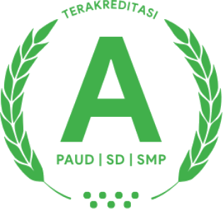
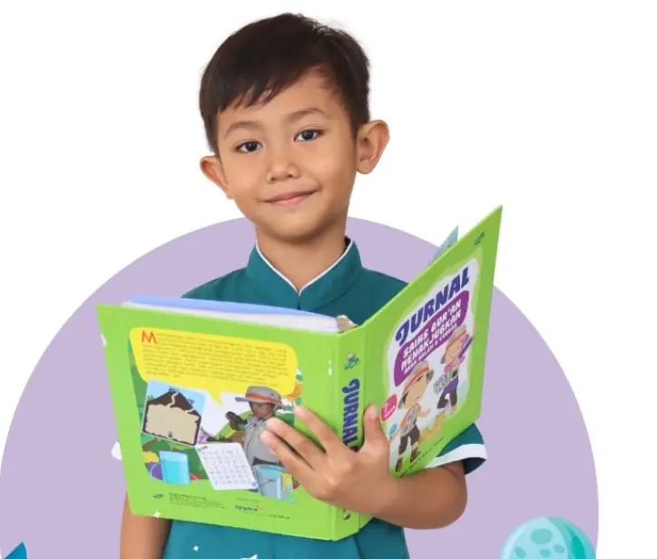
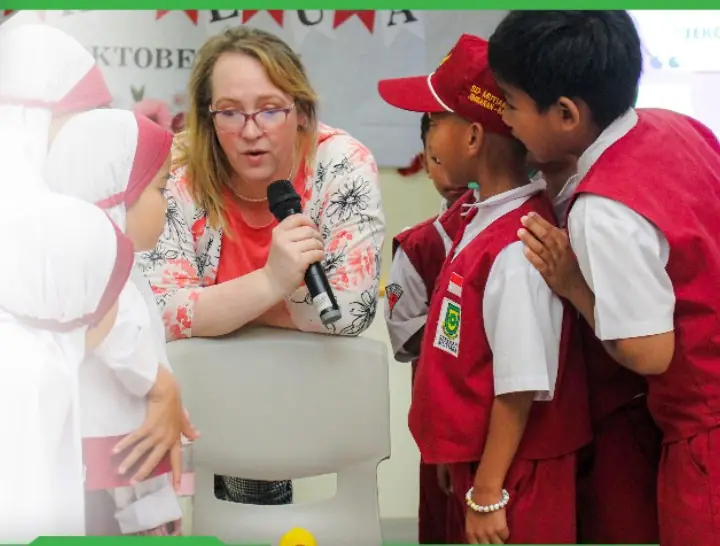
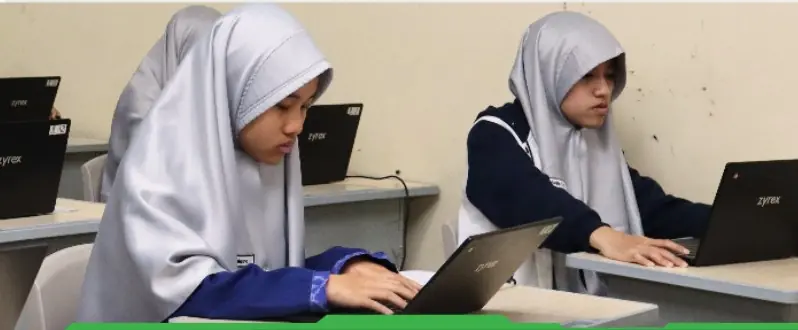

Academic Narrative
Academic material is packaged as real-life problem solving, so students also practise leading themselves and others.
Welcome to
Bright · Virtuous · Visionary
A school in Jimbaran, Bali for children from playgroup to junior high, where character, leadership and communication skills grow alongside strong academics.

Accredited A (Excellent)
All education levels

New student admissions 2027/2028 are open See how to enrol

A Warm Welcome
Early education is one of the main pillars that shapes a child’s future. Mutiara School offers character education that guides young people towards good morals, while leadership and communication skills are a core part of every programme.
Lailatul Widayati, S.H., M.Pd.Director of Education
7 Reasons
Teachers and staff who are trained, experienced and professional in education.
Programmes that build students’ skills and the daily habit of using a foreign language.
The Indonesian National Curriculum combined with Mutiara’s own curriculum.
Complete facilities for children with modern, up-to-date design.
A system that makes enrolment, academic information and payments easy for students and parents.
A clear aim: preparing a bright, virtuous and globally competitive generation.
Memorising and understanding the Qur’an so students make it a guide in daily life.
Education Levels
Every level is accredited A (Excellent) and follows a full day school system.

Ages 3–5Preschool (PAUD)Playgroup (KB) · Kindergarten A & BPlay and learn with the Sentra (BCCT) learning model.Learn more From age 6Primary School (SD)Grades 1–6Bright in spirit, academics and social life, with active English.Learn more
From age 6Primary School (SD)Grades 1–6Bright in spirit, academics and social life, with active English.Learn more  After primaryJunior High (SMP)Grades 7–9Leadership, research and literacy for confident teenagers.Learn more
After primaryJunior High (SMP)Grades 7–9Leadership, research and literacy for confident teenagers.Learn more Signature Programmes
Academic material is packaged as real-life problem solving, so students also practise leading themselves and others.

Periodic activities to develop English actively and enjoyably, in collaboration with FEE Center (Future English Education Center).

Step-by-step training in logical, analytical and critical thinking, with the basics of scientific methods suited to each age.

Programmes that grow students’ love of reading and build literacy to strengthen skills and knowledge.

Leadership woven into lessons, extracurricular activities and student organisations, including OSIS and Scouts.

A learning space for parents about education and children, guided by parenting practitioners.
Achievements
…and many more.


Testimonials

“Mutiara School is the right place for children to grow with noble values, to think critically and visionarily, and to have a strong fighting spirit, so they can become the pearls of the nation in the future.”

“Mutiara School gives a good moral foundation and supports my children’s interests and talents through inspiring programmes. We feel Mutiara School is a “second home” for Miracle and Maqdis. While studying here, we have seen them grow in discipline and take self-responsibility for their learning.”
“I like the environment at Mutiara School: the cleanliness, my friends and the atmosphere in class. The teachers are very responsive and caring when teaching, so when I had difficulty understanding a lesson, I was not afraid to ask and express my opinion.”
Translated from Indonesian.
Admissions
One Day Service
New student admissions 2027/2028 are open.
Does your child want to learn at Mutiara School?
Become a Mutiara student
Educational Partnership


Contact Us
Mutiara School is located in a strategic, comfortable area within Bali’s tourism district and the Bukit Jimbaran campus education area.
Jl. Lingkar Timur Udayana No. 8, Jimbaran, Kuta Selatan, Badung, Bali 80361, Indonesia
Monday – Friday, 08.00 – 15.00 (WITA)